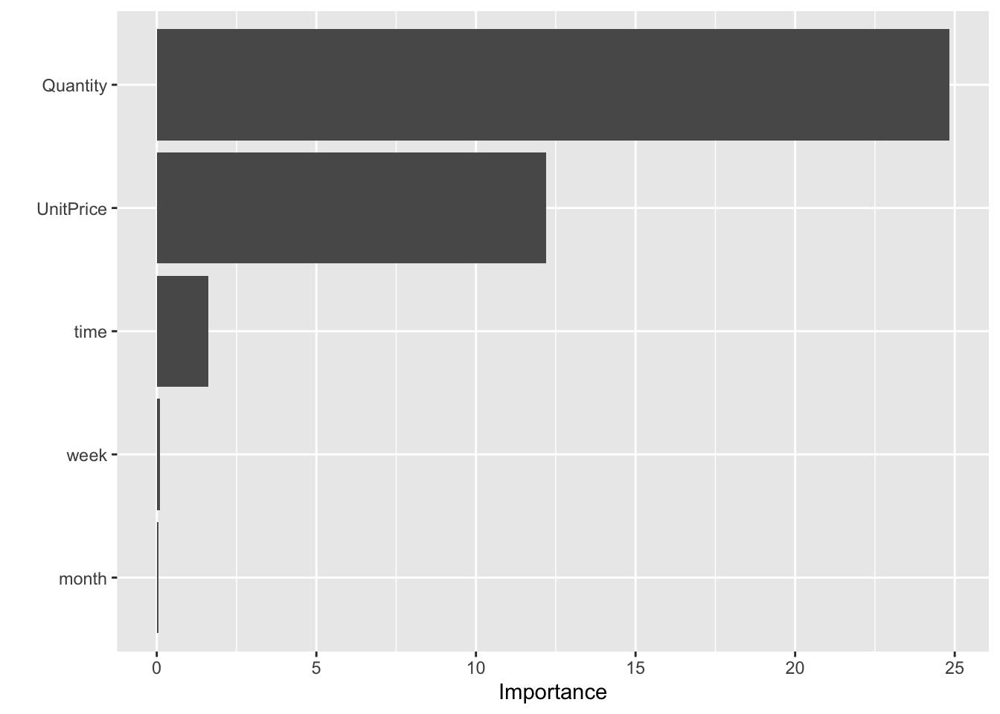

Chapter 4 [Model 3] Linear Regression
4.1 Perform Linear Regression
##
## Call:
## lm(formula = Sales ~ ., data = trainset)
##
## Residuals:
## Min 1Q Median 3Q Max
## -47.790 -4.115 -1.958 3.914 25.821
##
## Coefficients:
## Estimate Std. Error t value Pr(>|t|)
## (Intercept) 9.25464 0.69374 13.340 <2e-16 ***
## Quantity 0.49540 0.01239 39.988 <2e-16 ***
## UnitPrice 1.18164 0.03500 33.762 <2e-16 ***
## month 0.01222 0.03068 0.398 0.690
## week -0.04792 0.05790 -0.828 0.408
## time -0.44342 0.04418 -10.036 <2e-16 ***
## ---
## Signif. codes: 0 '***' 0.001 '**' 0.01 '*' 0.05 '.' 0.1 ' ' 1
##
## Residual standard error: 6.626 on 3789 degrees of freedom
## Multiple R-squared: 0.3835, Adjusted R-squared: 0.3827
## F-statistic: 471.4 on 5 and 3789 DF, p-value: < 2.2e-164.2 Linear Regression Evaluation
## [1] "The RMSE is: 6.49865708953365"We can simply interpret the the liner model by reading its summary. According to our sampled data, every unit increase in Quantity increases total sales by 0.65. The total sale will increase by 1.26 for every unit increase in UnitPrice. The total sale will reduce by 0.38 for every unit increase in time. However, in a linear regression model, the factors month and week have no significance in predicting sales.The p-values for month and week also suggests that there is no association between total sales and these two factors in a linear regression model.
The RMSE is 6.89, which is the highest compared to the previous two models. From the predicted values vs. true values plot, the linear model underestimate the total sales.
4.3 Interpretation of Linear Model

The Variance Importance Plot of Linear Regression model is similar to Random Forest Regression model. Quantity and UnitPrice are still two most important variable in predicting Sales. The importance of time is low, but not as negligible as it was in Tree Regression model.